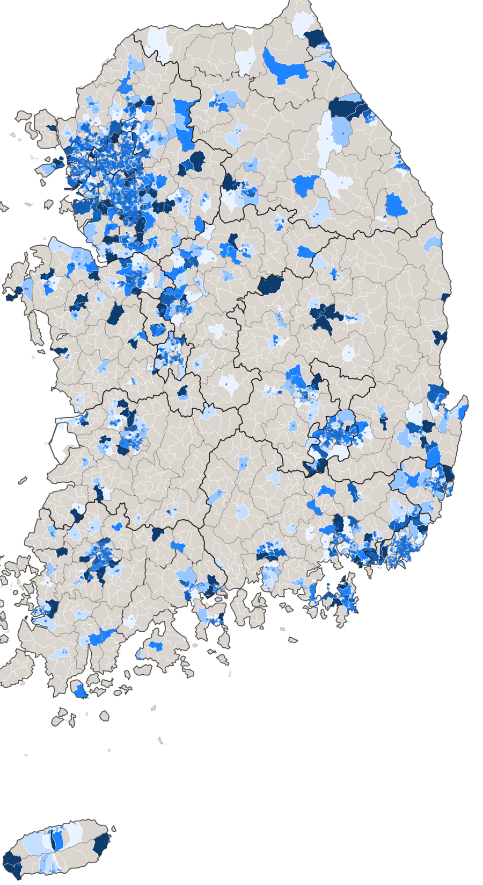

양쪽 끝이 같은 경기도입니다. 가장 많이 들어온 8곳 중 6곳, 가장 많이 빠져나간 8곳 중 4곳이 경기도 시군입니다. 부천·안산·광명·성남에서 빠진 사람이 화성·평택·하남·김포로 갔습니다. 지방소멸이 아니라 같은 생활권 안의 자리바꿈이고, 그렇다면 필요한 것은 인구 유치 홍보가 아니라 주택·교통·정주여건 쪽 대응입니다.
같은 방식으로 읍면동까지 내려가면, 시군구 평균에 가려진 동네별 차이가 드러납니다. 5세 단위 연령 구조를 붙이면 "누가 떠났는가"까지 볼 수 있습니다.
주거 · 스마트홈
전국 아파트 2만 1천 단지의 홈네트워크 지도
공동주택관리정보·주민등록인구·행정구역경계·도로명주소 건물DB를 하나로 묶어, 전국 아파트의 홈네트워크 보급 실태를 읍면동 단위까지 내렸습니다. 단지 위치는 도로명주소 건물DB 1,072만 건에 조인해 얻은 실제 좌표입니다.
21,687
전국 아파트 단지
1,236만
대상 세대수
45.9%
홈네트워크 도입 가구 비중
3,559
집계한 읍면동

읍면동별 홈네트워크 도입 가구비중. 진할수록 높음 · 회색은 아파트가 없는 읍면동. 시군구 평균으로 보면 안 보이던 같은 시 안의 격차가 드러납니다.
이 지도로 답이 되는 질문
도입률이 낮으면서 고령가구 비중이 높은 읍면동은 어디인가 — 돌봄·안전 서비스를 얹을 때 우선순위가 가장 높은 곳입니다. 두 지표를 곱해 우선순위 지수를 만들고 읍면동별로 정렬했습니다. 사업 대상지를 감으로 고르지 않아도 됩니다.
자료: 공동주택관리정보, 주민등록인구(읍면동 5세단위), 행정구역경계(시군구·행정동), 도로명주소 건물DB · 2026년 5월 기준 · 모두 공개된 공공데이터
Domains
다루는 영역
공통점은 시군구·읍면동 단위라는 것입니다. 전국 평균으로는 보이지 않는 것을 봅니다.
시군구단위 데이터분석인구·이동 분석건강·정신건강가족·이주여성세입세출·가용재원스마트홈 분석정책정보 대시보드컨설팅 + 자문 (프로젝트 기획 및 분석설계)